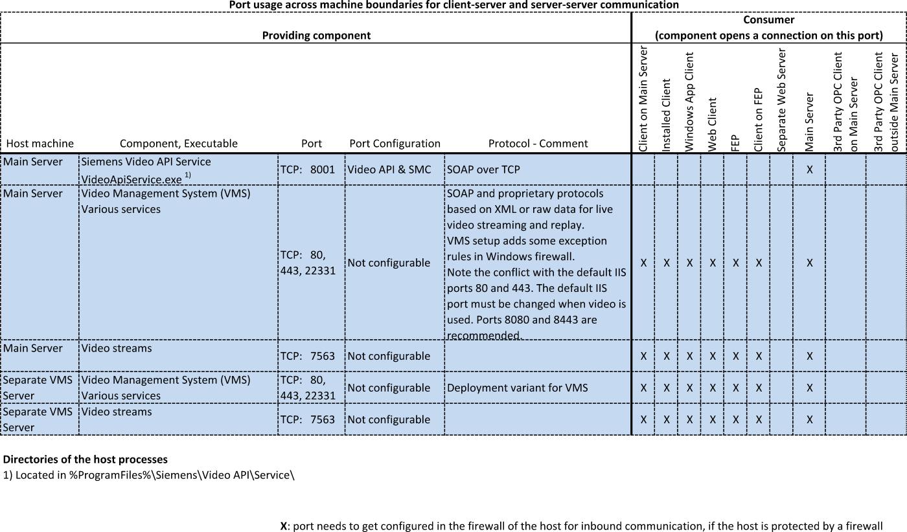

Milestone / Siveillance VMS Reference
This section contains important technical information about Siveillance VMS and compatible products (Milestone XProtect).
Siveillance Supported Editions and Versions
License Editions: The following Siveillance licenses can be used:
- Siveillance Video Pro (formerly VMS 300)
- Siveillance Video Advanced (formerly VMS 200)
- Siveillance Video Advanced Embedded (formerly VMS 200 embedded)
- Siveillance Video Core Plus (formerly VMS 100)
- Siveillance Video Core (formerly VMS 50)
Hardware Architectures
- Single server
- Server including cameras of interconnected systems
Software Versions: At the date of delivery, the following Siveillance software versions have been tested:
- Siveillance VMS v24.1a 2024 R1
- Siveillance VMS v23.3a 2023 R3
- Siveillance VMS v23.2a 2023 R2
- Siveillance VMS v23.1a 2023 R1
- Siveillance VMS v22.3c 2022 R3
- Siveillance VMS v22.2a 2022 R2
- Siveillance VMS v22.1a 2022 R1
- Siveillance VMS v21.2a 2021 R2
- Siveillance VMS v21.1b 2021 R1
- Siveillance VMS v20.3a 2020 R3
- Siveillance VMS v20.2a 2020 R2
- Siveillance VMS v20.1b 2020 R1
- Siveillance VMS v13.3a 2019 R3
- Siveillance VMS v13.2a 2019 R2
- Siveillance VMS v13.1a 2019 R1
- Siveillance VMS v12.3a 2018 R3
- Siveillance VMS v12.2a 2018 R2
Limitations in Siveillance Versions
The following versions do not support video recording bookmarks:
- Core (VMS 50)
To overcome this limitation, video recording tags are managed by Desigo CC. However, as consequences:
- You can no longer automatically start video recording when setting a tag. Instead, you must start recording and then set a tag while recording is in progress. See Recording Video.
- The configuration of video recording bookmarks in VMS has no effect on the tags.
For more information about more recent versions and specific device packs, contact customer support.
Milestone XProtect Supported Editions and Versions
License Editions: The following XProtect licenses can be used:
- Corporate
- Expert
- Professional+
- Express+
- Essential+
Hardware Architectures:
- Single server
- Server including cameras of interconnected systems
Software Versions: At the date of delivery, the following XProtect software versions have been tested:
- Milestone Advanced XProtect v24.1a 2024 R1
- Milestone Advanced XProtect v23.2a 2023 R2
- Milestone Advanced XProtect v23.1a 2023 R1
- Milestone Advanced XProtect v22.3c 2022 R3
- Milestone Advanced XProtect v22.2a 2022 R2
- Milestone Advanced XProtect v22.1a 2022 R1
- Milestone Advanced XProtect v21.2a 2021 R2
- Milestone Advanced XProtect v21.1b 2021 R1
- Milestone Advanced XProtect v20.3a 2020 R3
- Milestone Advanced XProtect v20.2a 2020 R2
- Milestone Advanced XProtect v20.1b 2020 R1
- Milestone Advanced XProtect v13.3a 2019 R3
- Milestone Advanced XProtect v13.2a 2019 R2
- Milestone Advanced XProtect v13.1a 2019 R1
- Milestone Advanced XProtect v12.3a 2018 R3
- Milestone Advanced XProtect v12.2a 2018 R2
Limitations in Milestone Versions
The following versions do not support video recording bookmarks:
- Express+
- Essential+
To overcome this limitation, video recording tags are managed by Desigo CC. However, as consequences:
- You can no longer automatically start video recording when setting a tag. Instead, you must start recording and then set a tag while recording is in progress. See Recording Video.
- The configuration of video recording bookmarks in Milestone has no effect on the tags.
For more information about more recent versions and specific device packs, contact customer support.
Technical Limitations for Siveillance / Milestone VMS integration with Desigo CC
The following constraints apply when the Milestone or Siveillance VMS is integrated with the management platform:
- A Desigo CC server can have only one project enabled for video (see Configure Project Settings for Video). Multiple Desigo CC projects running video on the same machine are not supported.
- A VMS server (possibly with additional interconnected VMS servers) can be connected to:
- Only one project on any given Desigo CC server.
- Only one of the Desigo CC servers in a distributed management platform deployment.
- Up to two separate Desigo CC servers operating independently (that is, not in distribution).
- Starting from Milestone / Siveillance VMS 2019 R2, new ports are used (9000 and 9001):
- In case of a port conflict, you can customize the VMS ports as follows: https://supportcommunity.milestonesys.com/s/article/change-port-numbers-9000-and-9001-used-by-Management-Server-and-Recording-Server?language=en_US
- For more information about the ports used by the VMS, see https://developer.milestonesys.com/s/article/TCPIP-ports-used-in-XProtect-Advanced-VMS-products.
- Windows Server 2020 is supported starting from Milestone / Siveillance VMS version 2019R1.
NOTE: Previous versions of the Milestone / Siveillance VMS (2018R3 and lower) are not compatible with Windows Server 2020. Therefore this operating system cannot be used for a Desigo CC system integrating these VMS providers. This limitation applies even when the VMS server runs on a separate computer.
Known Issues for Milestone and Siveillance VMS:
This section lists the known issues with the current integration of these VMS providers into the management platform.
- The first time a video stream from a camera is selected to display, loading of the stream may take 15 to 25 seconds depending on network and PC performance. Subsequent selections of the video stream will not have this delay.
- Off-line configuration is not supported. You can only fully configure video on a running system with video devices connected.
- Each Desigo CC project restart causes the video connection to stop. Operators must issue a new connect command from a client station after restarting the system project.
VMS Communication Ports
The following table illustrates the communication ports used by the video application. For more information about the related firewall rules, see Set up VMS Firewall Rules.

VMS Camera Compatibility
Major camera vendors such as Axis and Bosch should work out of the box if they are connected via vendor-specific drivers. If in doubt, refer to the hardware support list (see Support References).
Saimos Video Analytics Integration
The SAIMOS VA plugin integrates into the Milestone / Siveillance VMS video analytics capabilities powered by artificial intelligence:
- Perimeter Intrusion Detection
- People Counting
- Object Detection
- License Plate Recognition*
By default, analytic events are reported in Desigo CC.under the event category Status, with the name of the analytic event as defined in VMS. You can customize this behavior as instructed in Customizing VMS Analytic Events.
*NOTE: You can configure the SAIMOS plugin to generate an event whenever a license plate belonging to an allow-list / block-list is detected. Or, if no list is configured, it can generate an event whenever any license plate is detected. However, up until the current version (SAIMOS VA Plugin 2021 R2), in either case the detected license plate number is not passed on from the SAIMOS plugin to the VMS, and so will not appear in the corresponding Desigo CC event.
VMS Events
The following table illustrates the events generated by VMS and indicates the source objects and the alarm class in the management platform.
Events from VMS | |||
Source | Event Description | Alarm Class | System Alarm? |
|
|
|
|
Event | External Event | Recording Active |
|
|
|
|
|
Hardware | Enabled / Disabled | Disabled |
|
Hardware | Not Responding | Fault |
|
Hardware | Responding | Information |
|
Hardware | Hardware Communication Stopped | Disabled |
|
Hardware | Database Delete Before Set Retention Size | Information |
|
|
|
|
|
Input Event | Activated / Deactivated | Information | X |
Input Event | Enabled / Disabled | Information | X |
Input Event | Settings Changed | Information |
|
Input Event | Not Responding / Responding | Information |
|
Input Event | Input Changed | Information | X |
|
|
|
|
Microphone | Settings Changed | Information |
|
Microphone | Enabled / Disabled | Information |
|
Microphone | Not Responding / Responding | Information |
|
Microphone | Recording Started / Stopped | Information |
|
Microphone | Communication Stopped | Information |
|
Microphone | Live FPS Normal / Live FPS Warning / Live FPS Critical | Information |
|
Microphone | Recording FPS Normal / Recording FPS Warning / Recording FPS Critical | Information |
|
|
|
|
|
Output | Settings Changed | Information |
|
Output | Enabled / Disabled | Information | X |
Output | Output Activated / Deactivated | Information | X |
Output | Not Responding / Responding | Information |
|
Output | Output Changed | Information |
|
|
|
|
|
Server | Server Not Responding | Trouble | X |
Server | Server Responding | Information | X |
Server | Database Being repaired | Information | X |
Server | Running Out of Disk Space | Anomaly | X |
Server | Database Full Auto Archive | Anomaly | X |
Server | Database Disk Available | Information | X |
Server | Database Disk Available Driver | Information | X |
Server | Database Disk Full Driver | Anomaly | X |
Server | Database Disk Unavailable Driver | Anomaly | X |
Server | Database Failure: Disk Unavailable | Anomaly | X |
Server | Database Full Auto Archive Driver | Anomaly | X |
Server | Database Delete Before Set Retention Size Event | Anomaly | X |
Server | Database Delete Before Set Retention Time | Anomaly | X |
Server | Database Delete Before Set Retention Time Event | Anomaly | X |
Server | Database Disk Full Auto Archive | Anomaly | X |
Server | Database Disk Full Auto Archive Event | Anomaly | X |
Server | Enabled / Disabled | Information | X |
Server | Database Disk Full – Auto Archiving | Information | X |
Server | Not Responding | Fault |
|
Server | Responding | Information | X |
Server | Database Deleting Recordings Before Set Retention Time | Information |
|
Server | Database Deleting Recordings Before Set Retention Size | Information |
|
Server | Retention Time Normal | Information |
|
Server | Retention Time Critical | Information | X |
Server | Retention Time Warning | Information |
|
Server | Service Available Critical | Information |
|
Server | Service Available Normal | Information |
|
Server | CPU Usage Warning | Information | X |
Server | CPU Usage Normal | Information | X |
Server | CPU Usage Critical | Information | X |
|
|
|
|
Speaker | Settings Changed | Information |
|
Speaker | Enabled / Disabled | Information |
|
Speaker | Not Responding / Responding | Information |
|
Speaker | Recording Started / Recording Stopped | Information |
|
Speaker | Communication Stopped | Information |
|
|
|
|
|
Video Source | Motion Driver Started / Stopped | Information |
|
Video Source | Motion Detected | Motion Detection | X |
Video Source | Motion Stopped | Information |
|
Video Source | Tampering | Tamper | X |
Video Source | Live Client Feed Requested / Live Client Feed Terminated | Information |
|
Video Source | Recording Started | Recording Active |
|
Video Source | Recording Stopped | Information |
|
Video Source | Not Responding | Fault |
|
Video Source | Responding | Information |
|
Video Source | Enabled / Disabled | Information |
|
Video Source | PTZ Manual Session Started / PTZ Manual Session Stopped | Information |
|
Video Source | Bookmark Reference Requested | Information |
|
Video Source | Communication Stopped | Disabled |
|
Video Source | Feed Overflow Started / Feed Overflow Stopped | Information |
|
Video Source | Settings Changed | Information |
|
Video Source | Internal Temperature | Information | X |
Video Source | Analytics Start / Analytics End | Information |
|
Video Source | Site IQ Alarm | Video Sensor Alarm | X |
Video Source | Site IQ Pre-Alarm | Property Safety | X |
Video Source | Site IQ No alarm | Alarm |
|
Video Source | Video Loss / Video Loss End | Information |
|
Video Source | Settings Changed Error | Access Denied |
|
Video Source | Camera Shift | Information | X |
Video Source | Feed Overflow Started Driver / Feed Overflow Stopped Driver | Information | X |
Video Source | Manual Recording Started / Manual Recording Stopped | Information |
|
Video Source | Request Start Recording / Request Stop Recording | Information |
|
Video Source | Tampering Start / Tampering End | Tamper | X |
Video Source | Live FPS Normal / Live FPS Warning | Information |
|
Video Source | Video Loss End | Information |
|
Video Source | Recording FPS Normal | Information |
|
Video Source | Recording FPS Warning | Information |
|
Video Source | Live FPS Critical | Motion Detection | X |
Video Source | Recording FPS Critical | Motion Detection | X |
Video Source | LPR Camera Connection Lost | Fault | X |
Video Source | LPR Camera Running | Information | X |
Video Source | Unlisted License Plate | Video Sensor Alarm | X |
Video Source | License Plate Match List | Video Sensor Alarm | X |
|
|
|
|
VmsTrigger | Trigger | Activation | X |
VmsTrigger | VideoApiStartEventRecording | Activation |
|
|
|
|
|
|
|
|
|
Default | Anti Rotating Start / Anti Rotating Stop | Information | X |
Default | Archive Disk Available | Information | X |
Default | Archive Failure: Archive Disk Unavailable | Information | X |
Default | Archive Disk Available Driver | Information | X |
Default | Archive Disk Unavailable Driver | Information | X |
Default | Archive Not Finished | Information | X |
Default | Archive Failed Driver | Information | X |
Default | Audio Falling | Information | X |
Default | Audio Passing | Information | X |
Default | Audio Rising | Information | X |
Default | Auto Tracker Start / Auto Tracker Stop | Information | X |
Default | Bookmark Reference Requested | Information | X |
Default | Defocus Start / Defocus Stop | Information | X |
Default | Device Settings Changed Driver | Information | X |
Default | Device Write Failed Driver | Information | X |
Default | Device Group Member Added | Information | X |
Default | Device Group Member Deleted | Information | X |
Default | Directional Motion Start / Directional Motion Stop | Information | X |
Default | Disk Space Low Driver | Information | X |
Default | EDO Start | Information | X |
Default | EDO Stop | Information | X |
Default | Event Source | Information | X |
Default | Evidence Lock Changed | Information | X |
Default | Face Appearing / Face Disappearing | Information | X |
Default | Failover Started / Failover Stopped | Information | X |
Default | Fault Start / Fault Stop | Information | X |
Default | Images Received | Information | X |
Default | Line Counter 1 | Information | X |
Default | Line Counter 2 | Information | X |
Default | Loitering Detection Start / Loitering Detection Stop | Information | X |
Default | LPR Server Responding | Information | X |
Default | LPR Server Not Responding | Fault | X |
Default | Marked Data Reference Requested | Information | X |
Default | Master Alarm Start / Master Alarm Stop | Information | X |
Default | Object Appearing | Information | X |
Default | Object Counting Start / Object Counting Stop | Information | X |
Default | Object Direction | Information | X |
Default | Object Disappearing | Information | X |
Default | Object Dwelling | Information | X |
Default | Object Entering / Object Exiting | Information | X |
Default | Object Presence | Information | X |
Default | Object Removal Start / Object Removal Stop | Information | X |
Default | Object Speed | Information | X |
Default | Object Stopping | Information | X |
Default | Periodic Timer Event | Information | X |
Default | Recordings Evidence Locked / Recordings Evidence Unlocked | Information | X |
Default | Relative Timer Event | Information | X |
Default | Scene Change / Scene Change Stop | Information | X |
Default | Service Available Normal | Information |
|
Default | Service Available Critical | Anomaly |
|
Default | Soiled Window Start / Soiled Window Stop | Information | X |
Default | Stopped Vehicle Start / Stopped Vehicle Stop | Information | X |
Default | Tailgating | Information | X |
Default | Target Item Activated / Target Item Deactivated | Information | X |
Default | Temperature | Information | X |
Default | Temperature Above / Temperature Below | Information | X |
Default | Temperature Start / Temperature End | Information | X |
Default | Tripwire | Information | X |
Default | Trouble Start / Trouble Stop | Information | X |
Default | Two-Camera Tracking Start / Two-Camera Tracking Stop | Information | X |
Default | Video API Start Event Recording | Information | X |